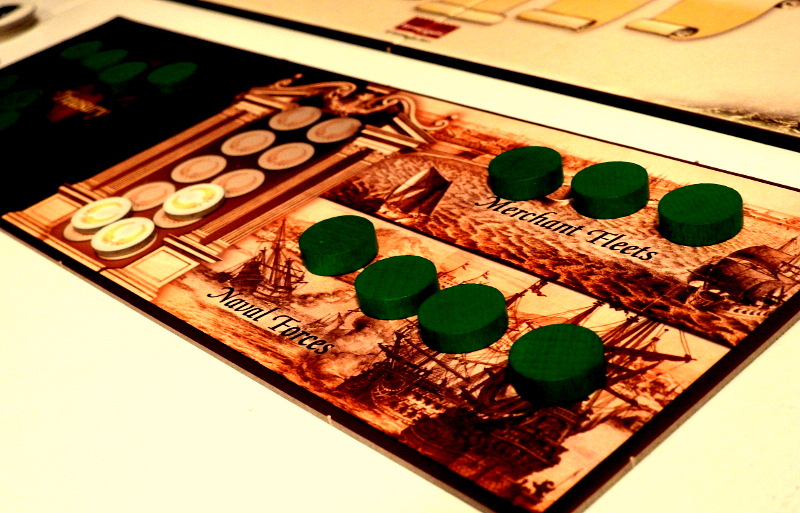
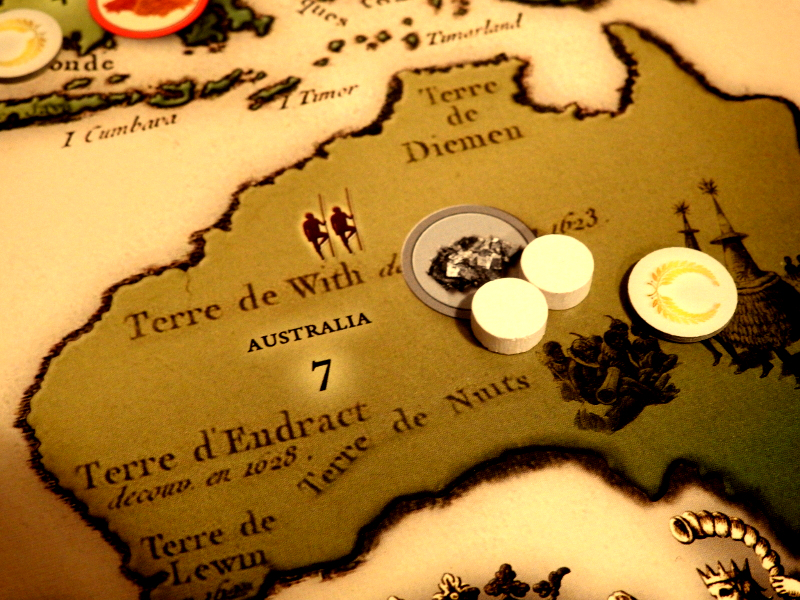
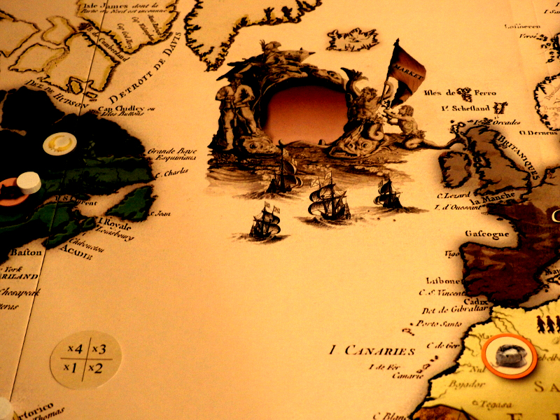
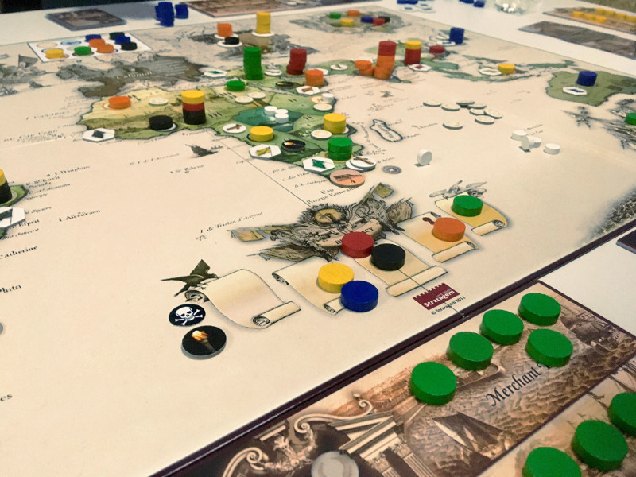

The Overhauled Colonial Experience
 Generalu Stelaru
Generalu Stelaru
Colonial had a lukewarm reception. The First Edition had a fair amount of shortcomings. The second time around Cristophe Pont made things better, especially by making loans work as they normally would. The community seemed to embrace the Second Edition as a significant improvement. However, in my humble opinion, the main glaring issues that plagued it had not been resolved, and I will elaborate on that.
TL:DR I have recently made a breakthrough, which, in my opinion, turns Colonial into what it should have been from the beginning.
Colonial: Europe's Empires Overseas is an atypical 4x strategy game that aims to recreate some four hundred years of history, beginning from the Renaissance period and culminating around the Industrial Revolution, when Colonialism had reached its peak.
As I see it, Colonial's main selling point is the way in which it treats this complex subject with a minimum of game components and rules. Players use colored wooden disks for virtually everything they do. The individual Nation Boards have spaces for Treasury, Merchant Fleets, and Naval Forces, all of which have very different uses. On the game board, the discs determine control and army size, they mark technological advancements and diplomatic relations, as well as represent Goods and individual credit loans.
The game begins humbly, with nations having their meager navies, modest treasuries and a couple of merchant fleets each, ready to make a profit.
During every game round, players will select, in secret, five of the twelve available actions, which are hard-coupled onto six cards. Then, one by one, players reveal these actions and resolve them as expected, or to the surprise of some, sometimes including their own.
In summary, the actions are the following:
- Explorer - rolls dice to explore new territories and gain Prestige (VP)
- Viceroy - puts discs as population on the map
- Rebel - creates turmoil and attempts to create popular revolts against controlled territories
- Misionary - counters the Rebel
- Merchant - uses the Merchant Fleet to carry Goods to Europe
- Trader - sells Goods for profit
- Governor - places a Booming City that forces trade through its territory.
- Financeer - grants reambursable loans with interest
- Conqueror - establishes Colonies in controlled territories for Prestige and monetary benefits
- Sovereign - starts war against other nations, which culminate with transfer of Prestige
- Diplomat - raises diplomatic standing, which protects against war
- Scientist - permanently improves the effect of other actions
The Explorer is probably the most critically required action that you can do in Colonial. When players explore, they roll ten custom dice, which have two success sides and four blank sides. Depending on the result, they may succeed at exploring a chosen territory and gain a Prestige Point in the process. Then they may gain control of one of the available resources there.
Gaining ten Prestige points is how you win in Colonial. However, depending on the agressiveness other players, you will have to establish Colonies to prevent takeover, and build a strong Navy to safeguard your Merchant Fleets.
Besides doing favors for money, there are five avenues in which you can fill your coffers, the basis of all being the quasi-generic Goods that Nations produce in the explored world.
By using their Merchant Fleets, players may ship these resources to the Market, creating stocks ready to be sold. A staple of gameplay in Colonial is player-negotiation. Most of the twelve actions, allow the players to interact among themselves at various levels. In this case, several nations can rely on a single large Merchant Fleet to get their Goods to the Market, and make an immediate profit.
In turn, Nations that have strong economic influence in Europe (via Scientist), or that hold strong Colonies, can sell these Goods to the market, making a profit for every player who's shipped Good was sold.
Speaking of which, establishing a Colony is the best way of ensuring your control over resources, as having strict colonial rule over the territory shuts down foreign infiltration. However, the more populous a region is, the longer it takes to establish dominion. Once you've achieved it though, you are awarded a Prestige Point and also get to pillage the natives for a quick buck, gaining their eternal sympathy and a little Unrest
Another way to keep up with your expenses is to bully nations with few naval forces. Wars in Colonial are risky and often very crippling, but generally speaking, a bigger navy will destroy a weaker one, as well as sink some merchants eventually, if their adoptive nation doesn't surrender soon enough. As the wars end with the loser transferring a Prestige Point to the winner, you can see why having a strong military integrates perfectly into Colonial's economic system.
Finally, for those who are struggling, there's always the credit option. Nations can survive and even thrive on bank loans alone. If no other player is willing to invest in your exploits, rest assured that your court Financier is more than happy to provide you with the amount you need, of course, within the limits of your credit score.
However, in Colonial, you can't achieve greatness through financial slavery. A player cannot win the game until he pays off all of his nation's debt. The longer you delay this, the harder it becomes, as interest rates start piling up and eventually suffocate your chances of winning.
You can see why I adore the theme of Colonial. Yeah, sure, there are some unsavory aspects to deal with, such as the slavery theme, complete with rules for triangular trade, the suppression of native populations, the use of Jesuit missions to brainwash locals, and the subversive manipulation of local leaders for political and economic gains. However, we need to give some credit to our greatest allies. If it weren't for 'them white slavers,' we wouldn't have had the chance to simulate such an interesting period of history.
But the reasons for why Colonial did not rise in ratings, is in my opinion, the misfortune of not having been tested enough. By the time the Second Edition came about, the judgment had been cast, and the "Cult of the New" followers were already focusing on something else.
The game has many merits. The programmable action selection system requires some forward thinking, but not so much as to turn the game into a crawl, as I've experienced with Shogun and Wallenstein. The use of multi-purpose player disks is neat. I suspect that Christophe Pont has drawn some inspiration from Endeavor, which was released just two years prior.
However, the final product is too prone to favor the luck of the roll, where the dice rolls are too few to even out. This mechanism is in stark contrast to the deterministic, multi-layered economic system, that is, inarguably, too slow against a rush of successful exploration actions.
In a game that is set to recreate the challenges of the age of exploration, throwing a bunch of dice to determine whether you get a Prestige point or not is beyond ludicrous; Why would a player ever think of colonizing China when simply rolling dice can yield the same reward?!
This contrast, despite the high diversity of actions and the potential for a highbrow diplomatic game, deprives the player of meaningful choices. It makes for a bittersweet experience, and not something to bring out to the table very often.
As far as the Second Edition goes, I would only play it with theme geeks, and even then, I would make sure to explain the shortcomings, as to avoid frustration and eventual disappointment.
Variants
However, the game's premise has intrigued me ever since I discovered it, years ago. Already being a fan of Endeavor, I wanted something less abstracted, and Colonial seemed to be the perfect fit. I was well aware of the shortcomings of both, the first and second editions, but I always felt that the whole package had the potential to resemble an above than average title.
As you might have already learned, the aspect that bothered me most was not the first edition's Privateers, nor the set of choices during colony establishment, but, as you might expect, the friggin' random-reward-for-a-dice-roll-exploration-system!
But, through a miracle, all of this changed after checking out a variant that I found on BoardGameGeek. This rule modification turns exploration on its head. The creator (username: Gubban) proposes that instead of rolling ten dice to meet a threshold, you should pay Treasury to match it. Then, instead of getting a Prestige, you would gain an Exploration Token.
Now, Gubban's original concept resembles a race on each continent to gain the lead in tokens, but that idea includes acquiring perpetually contested Prestige points, which, unfortunately, doesn't gel with how wars work in Colonial.
Hence I decided to simplify it by removing the majority aspect and making all exploration tokens count as one-third of a Prestige Point, while each territory is set-up with a number of tokens and Prestige according to their exploration ratings (1 token for rating-3, 2 tokens for 4 and so on). Furthermore, I equated colony point reward with the number of native symbols present. In truth, one could easily make almost any modification, including changing actions on cards, or even the card play itself, but I don't think Colonial is in such a dire condition.
I'm telling you, with six players, we saw early incursions in Africa, early colonies established in India and China, and a proper delayed discovery of America. In a sentence, this modified variant makes Colonial (2nd Ed.) worthy of being one of the best games about colonialism out there. I now have the confidence to bring it out at any medium-heavy game night.